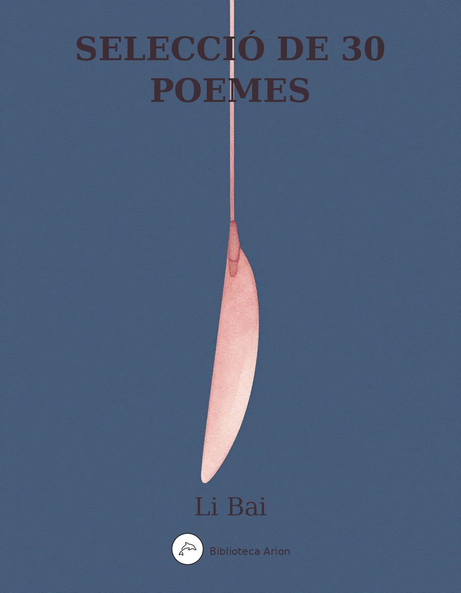

Selecció de 30 poemes
李白詩選三十首
Selecció de trenta poemes representatius de Li Bai (701–762), el poeta més celebrat de la dinastia Tang. Inclou obres mestres com 靜夜思 (Pensaments en una nit tranquil·la), 將進酒 (Que vingui el vi!), 蜀道難 (El camí difícil de Shu) i 夢遊天姥吟留別 (Somiant una excursió al mont Tianmu).
Selecció de 30 poemes de Li Bai (李白, 701–762)
1. 靜夜思 (Pensaments en una nit tranquil·la)
床前明月光， 疑是地上霜。 舉頭望明月， 低頭思故鄉。
2. 望廬山瀑布 (Contemplant la cascada del mont Lu)
日照香爐生紫煙， 遙看瀑布掛前川。 飛流直下三千尺， 疑是銀河落九天。
3. 早發白帝城 (Partint a l’alba de la Ciutat de l’Emperador Blanc)
朝辭白帝彩雲間， 千里江陵一日還。 兩岸猿聲啼不住， 輕舟已過萬重山。
4. 將進酒 (Que vingui el vi!)
君不見黃河之水天上來， 奔流到海不復回。 君不見高堂明鏡悲白髮， 朝如青絲暮成雪。 人生得意須盡歡， 莫使金樽空對月。 天生我材必有用， 千金散盡還復來。 烹羊宰牛且為樂， 會須一飲三百杯。 岑夫子，丹丘生， 將進酒，杯莫停。 與君歌一曲， 請君為我傾耳聽。 鐘鼓饌玉不足貴， 但願長醉不復醒。 古來聖賢皆寂寞， 惟有飲者留其名。 陳王昔時宴平樂， 斗酒十千恣歡謔。 主人何為言少錢， 徑須沽取對君酌。 五花馬，千金裘， 呼兒將出換美酒， 與爾同銷萬古愁。
5. 月下獨酌 其一 (Bevent sol sota la lluna, I)
花間一壺酒， 獨酌無相親。 舉杯邀明月， 對影成三人。 月既不解飲， 影徒隨我身。 暫伴月將影， 行樂須及春。 我歌月徘徊， 我舞影零亂。 醒時同交歡， 醉後各分散。 永結無情遊， 相期邈雲漢。
6. 行路難 其一 (El camí difícil, I)
金樽清酒斗十千， 玉盤珍羞直萬錢。 停杯投箸不能食， 拔劍四顧心茫然。 欲渡黃河冰塞川， 將登太行雪滿山。 閑來垂釣碧溪上， 忽復乘舟夢日邊。 行路難，行路難， 多歧路，今安在？ 長風破浪會有時， 直掛雲帆濟滄海。
7. 蜀道難 (El camí difícil de Shu)
噫吁嚱，危乎高哉！ 蜀道之難，難於上青天！ 蠶叢及魚鳧，開國何茫然！ 爾來四萬八千歲，不與秦塞通人煙。 西當太白有鳥道，可以橫絕峨眉巔。 地崩山摧壯士死，然後天梯石棧相鉤連。 上有六龍回日之高標，下有衝波逆折之回川。 黃鶴之飛尚不得過，猿猱欲度愁攀援。 青泥何盤盤，百步九折縈巖巒。 捫參歷井仰脅息，以手撫膺坐長嘆。 問君西遊何時還？畏途巉巖不可攀。 但見悲鳥號古木，雄飛雌從繞林間。 又聞子規啼夜月，愁空山。 蜀道之難，難於上青天，使人聽此凋朱顏！ 連峰去天不盈尺，枯松倒掛倚絕壁。 飛湍瀑流爭喧豗，砯崖轉石萬壑雷。 其險也如此，嗟爾遠道之人胡為乎來哉！ 劍閣崢嶸而崔嵬，一夫當關，萬夫莫開。 所守或匪親，化為狼與豺。 朝避猛虎，夕避長蛇。 磨牙吮血，殺人如麻。 錦城雖云樂，不如早還家。 蜀道之難，難於上青天，側身西望長咨嗟！
8. 送友人 (Comiat a un amic)
青山橫北郭， 白水繞東城。 此地一為別， 孤蓬萬里征。 浮雲遊子意， 落日故人情。 揮手自茲去， 蕭蕭班馬鳴。
9. 夜泊牛渚懷古 (Nit ancorat a Niuzhu, pensant en l’antiguitat)
牛渚西江夜， 青天無片雲。 登舟望秋月， 空憶謝將軍。 余亦能高詠， 斯人不可聞。 明朝掛帆席， 楓葉落紛紛。
10. 黃鶴樓送孟浩然之廣陵 (Comiat a Meng Haoran a la Torre de la Grua Groga, camí de Guangling)
故人西辭黃鶴樓， 煙花三月下揚州。 孤帆遠影碧空盡， 唯見長江天際流。
11. 贈汪倫 (Per a Wang Lun)
李白乘舟將欲行， 忽聞岸上踏歌聲。 桃花潭水深千尺， 不及汪倫送我情。
12. 望天門山 (Contemplant la muntanya Tianmen)
天門中斷楚江開， 碧水東流至此回。 兩岸青山相對出， 孤帆一片日邊來。
13. 獨坐敬亭山 (Assegut sol al mont Jingting)
眾鳥高飛盡， 孤雲獨去閒。 相看兩不厭， 只有敬亭山。
14. 春夜洛城聞笛 (Sentint una flauta a Luoyang en una nit de primavera)
誰家玉笛暗飛聲， 散入春風滿洛城。 此夜曲中聞折柳， 何人不起故園情。
15. 夢遊天姥吟留別 (Somiant una excursió al mont Tianmu: poema de comiat)
海客談瀛洲，煙濤微茫信難求。 越人語天姥，雲霞明滅或可睹。 天姥連天向天橫，勢拔五嶽掩赤城。 天台四萬八千丈，對此欲倒東南傾。 我欲因之夢吳越，一夜飛度鏡湖月。 湖月照我影，送我至剡溪。 謝公宿處今尚在，淥水蕩漾清猿啼。 腳著謝公屐，身登青雲梯。 半壁見海日，空中聞天雞。 千巖萬轉路不定，迷花倚石忽已暝。 熊咆龍吟殷巖泉，慄深林兮驚層巔。 雲青青兮欲雨，水澹澹兮生煙。 列缺霹靂，丘巒崩摧。 洞天石扉，訇然中開。 青冥浩蕩不見底，日月照耀金銀台。 霓為衣兮風為馬，雲之君兮紛紛而來下。 虎鼓瑟兮鸞回車，仙之人兮列如麻。 忽魂悸以魄動，恍驚起而長嗟。 惟覺時之枕席，失向來之煙霞。 世間行樂亦如此，古來萬事東流水。 別君去兮何時還？且放白鹿青崖間，須行即騎訪名山。 安能摧眉折腰事權貴，使我不得開心顏！
16. 子夜吳歌 秋歌 (Cançó de Wu a mitjanit: Cançó de tardor)
長安一片月， 萬戶擣衣聲。 秋風吹不盡， 總是玉關情。 何日平胡虜， 良人罷遠征。
17. 玉階怨 (Lament a l’escalinata de jade)
玉階生白露， 夜久侵羅襪。 卻下水晶簾， 玲瓏望秋月。
18. 清平調 其一 (Melodia de Qingping, I)
雲想衣裳花想容， 春風拂檻露華濃。 若非群玉山頭見， 會向瑤台月下逢。
19. 清平調 其二 (Melodia de Qingping, II)
一枝紅艷露凝香， 雲雨巫山枉斷腸。 借問漢宮誰得似， 可憐飛燕倚新妝。
20. 清平調 其三 (Melodia de Qingping, III)
名花傾國兩相歡， 長得君王帶笑看。 解釋春風無限恨， 沉香亭北倚闌干。
21. 宣州謝朓樓餞別校書叔雲 (Comiat al secretari Shuyun a la torre de Xie Tiao a Xuanzhou)
棄我去者，昨日之日不可留； 亂我心者，今日之日多煩憂。 長風萬里送秋雁，對此可以酣高樓。 蓬萊文章建安骨，中間小謝又清發。 俱懷逸興壯思飛，欲上青天覽明月。 抽刀斷水水更流，舉杯銷愁愁更愁。 人生在世不稱意，明朝散髮弄扁舟。
22. 長干行 (Cançó de Changgan)
妾髮初覆額，折花門前劇。 郎騎竹馬來，繞床弄青梅。 同居長干里，兩小無嫌猜。 十四為君婦，羞顏未嘗開。 低頭向暗壁，千喚不一回。 十五始展眉，願同塵與灰。 常存抱柱信，豈上望夫台。 十六君遠行，瞿塘灩澦堆。 五月不可觸，猿聲天上哀。 門前遲行跡，一一生綠苔。 苔深不能掃，落葉秋風早。 八月蝴蝶黃，雙飛西園草。 感此傷妾心，坐愁紅顏老。 早晚下三巴，預將書報家。 相迎不道遠，直至長風沙。
23. 廬山謠寄盧侍御虛舟 (Balada del mont Lu, enviada al censor Lu Xuzhou)
我本楚狂人，鳳歌笑孔丘。 手持綠玉杖，朝別黃鶴樓。 五嶽尋仙不辭遠，一生好入名山遊。 廬山秀出南斗傍，屏風九疊雲錦張。 影落明湖青黛光，金闕前開二峰長。 銀河倒掛三石梁，香爐瀑布遙相望。 迴崖沓嶂凌蒼蒼。 翠影紅霞映朝日，鳥飛不到吳天長。 登高壯觀天地間，大江茫茫去不還。 黃雲萬里動風色，白波九道流雪山。 好為廬山謠，興因廬山發。 閑窺石鏡清我心，謝公行處蒼苔沒。 早服還丹無世情，琴心三疊道初成。 遙見仙人彩雲裏，手把芙蓉朝玉京。 先期汗漫九垓上，願接盧敖遊太清。
24. 把酒問月 (Amb la copa a la mà, preguntant a la lluna)
青天有月來幾時？我今停杯一問之。 人攀明月不可得，月行卻與人相隨。 皎如飛鏡臨丹闕，綠煙滅盡清輝發。 但見宵從海上來，寧知曉向雲間沒？ 白兔搗藥秋復春，嫦娥孤棲與誰鄰？ 今人不見古時月，今月曾經照古人。 古人今人若流水，共看明月皆如此。 唯願當歌對酒時，月光長照金樽裏。
25. 秋浦歌 其十五 (Cançó de Qiupu, XV)
白髮三千丈， 緣愁似箇長。 不知明鏡裏， 何處得秋霜。
26. 渡荊門送別 (Travessant la porta de Jingmen: comiat)
渡遠荊門外， 來從楚國遊。 山隨平野盡， 江入大荒流。 月下飛天鏡， 雲生結海樓。 仍憐故鄉水， 萬里送行舟。
27. 聞王昌齡左遷龍標遙有此寄 (En saber de l’exili de Wang Changling a Longbiao, envio aquest poema)
楊花落盡子規啼， 聞道龍標過五溪。 我寄愁心與明月， 隨風直到夜郎西。
28. 峨眉山月歌 (Cançó de la lluna al mont Emei)
峨眉山月半輪秋， 影入平羌江水流。 夜發清溪向三峽， 思君不見下渝州。
29. 關山月 (La lluna sobre la frontera)
明月出天山， 蒼茫雲海間。 長風幾萬里， 吹度玉門關。 漢下白登道， 胡窺青海灣。 由來征戰地， 不見有人還。 戍客望邊邑， 思歸多苦顏。 高樓當此夜， 嘆息未應閒。
30. 下終南山過斛斯山人宿置酒 (Baixant del mont Zhongnan, passo la nit amb l’ermità Husi i bevem vi)
暮從碧山下， 山月隨人歸。 卻顧所來徑， 蒼蒼橫翠微。 相攜及田家， 童稚開荊扉。 綠竹入幽徑， 青蘿拂行衣。 歡言得所憩， 美酒聊共揮。 長歌吟松風， 曲盡河星稀。 我醉君復樂， 陶然共忘機。
Nota: Selecció basada en les antologies clàssiques 唐詩三百首 (Tres-cents poemes Tang) i 李太白全集 (Obres completes de Li Taibai). Textos en xinès clàssic (文言文), domini públic.
Selecció de 30 poemes
Li Bai (李白, 701–762)
Traduït del xinès clàssic per Biblioteca Arion
1. 靜夜思 — Pensaments en una nit tranquil·la
Davant del llit, la llum clara de la lluna, semblava gelada escampada per terra. Alço el cap i miro la lluna brillant, el baixo i penso en la meva terra natal.
2. 望廬山瀑布 — Contemplant la cascada del mont Lu
El sol il·lumina el Cremador d’Encens i en surt boira violeta, des de lluny veig la cascada penjada al torrent. El corrent vola i cau tres mil peus avall: es diria la Via Làctia precipitant-se del novè cel.
3. 早發白帝城 — Partint a l’alba de la Ciutat de l’Emperador Blanc
A l’alba dic adeu a Baidi entre núvols irisats, els mil li fins a Jiangling, un sol dia de viatge. D’ambdues ribes els crits dels micos no s’aturen, la barca lleugera ja ha passat deu mil muntanyes.
4. 將進酒 — Que vingui el vi!
¿No veus l’aigua del Riu Groc baixant del cel, corrent cap al mar sense mai tornar? ¿No veus al gran saló el mirall clar lamentar els cabells blancs, que al matí són seda negra i al vespre, neu?
En la vida, quan tot va bé, cal exhaurir l’alegria: no deixis la copa d’or buida davant la lluna. El cel m’ha donat talent i m’ha de ser útil, mil monedes d’or gastades, tornaran.
Cuina el xai, mata el bou, fem festa, cal beure d’una tirada tres-centes copes. Mestre Cen, senyor Danqiu, que vingui el vi, no atureu les copes!
Us cantaré una cançó, escolteu-me amb atenció. Campanes, tambors i menjars refinats no valen gaire: només vull restar ebri i no despertar mai més.
Des de l’antiguitat els savis i els sants foren tots solitaris, només els bevedors han deixat el seu nom. El príncep Chen en temps passats festejava a Pingle, vi a deu mil per mesura, rient sense fre.
Amfitrió, per què parles de pocs diners? Vés directe a comprar vi i brindarem junts. El cavall de cinc colors, la pellissa de mil monedes d’or: crida el noi que els tregui i els canviï per bon vi. Amb tu dissolc la tristesa de deu mil anys.
5. 月下獨酌 其一 — Bevent sol sota la lluna, I
Entre les flors, una gerra de vi, bec sol, sense ningú al costat. Alço la copa i convido la lluna brillant: amb la meva ombra som tres.
La lluna no sap beure, l’ombra no fa més que seguir-me. Per un moment acompanyo lluna i ombra, gaudir cal fer-ho a la primavera.
Jo canto i la lluna vacil·la, jo danso i l’ombra s’esvalota. Desperts compartim l’alegria, ebris cadascú se’n va pel seu cantó.
Fem un pacte etern sense passions, ens retrobarem a la llunyana Via Làctia.
6. 行路難 其一 — El camí difícil, I
Vi clar a la copa d’or, deu mil per mesura, delicadeses al plat de jade, que valen una fortuna. Deixo la copa, amago els bastonets, no puc menjar, desembeino l’espasa, miro al voltant, el cor desolat.
Vull creuar el Riu Groc: el gel tanca el pas. Vull pujar al Taihang: la neu cobreix la muntanya. En un moment d’oci pesco a la riba del torrent verd, de sobte somio que embarco cap al sol.
El camí és difícil, el camí és difícil, tantes cruïlles — on sóc ara? Un dia el gran vent trencarà les onades, i hissaré les veles entre núvols travessant el mar immens.
7. 蜀道難 — El camí difícil de Shu
Ai, quin perill, quina alçada! El camí de Shu és més difícil que pujar al cel blau! Cancong i Yufu fundaren el seu regne en temps remots. Des d’aleshores, quaranta-vuit mil anys sense pas humà cap a les terres de Qin.
A l’oest, al Taibai hi ha un sender d’ocells que travessa el cim de l’Emei. La terra es va esquinçar i la muntanya va caure, els guerrers van morir, i després escales celestials i passarel·les de pedra es van entrellaçar.
Dalt, el pilar on sis dracs fan girar el sol; a baix, les ones que es tornen i es trenquen en remolins. Ni la grua groga hi pot volar, els micos voldrien passar i es lamenten d’enfilar-s’hi.
Com serpenteja el fang verd! Cent passos, nou revolts cenyint les crestes. Tocant les estrelles del Sagitari i del Pou, alço el cap i em quedo sense alè; amb la mà al pit, m’assec i sospiro.
Pregunto: quan tornaràs del viatge a l’oest? El camí terrible, els espadats, no es poden escalar. Només es veuen ocells trists cridant als arbres vells, mascle i femella volant entre els boscos. I se sent el cucut cantant a la lluna de nit — tristesa a la muntanya buida.
El camí de Shu és més difícil que pujar al cel blau: fa empal·lidir qui ho escolta! Els cims toquen el cel a menys d’un pam, els pins secs pengen cap avall als precipicis. Torrents i cascades competeixen en fragor, colpegen els espadats, arrosseguen pedres, mil valls retronen.
Tan perillós és tot! Ai, viatger de terres llunyanes, per què has vingut? El Pas de l’Espasa, aspre i altiu — un sol home el defensa i deu mil no passen. Si el guardià no és de fiar, es torna llop i xacal.
Al matí esquiva el tigre ferotge, al vespre la serp llarga. Esmolen les dents, xuclen la sang, maten com qui sega. Diuen que la Ciutat de Brocat és plaent: més val tornar a casa aviat. El camí de Shu és més difícil que pujar al cel blau — miro a l’oest i sospiro!
8. 送友人 — Comiat a un amic
Les muntanyes verdes travessen la muralla nord, l’aigua blanca envolta la ciutat de l’est. Aquí ens separem, el card solitari viatja deu mil li.
Núvols flotants: l’ànima del viatger; sol ponent: el sentiment de l’amic. Un gest de la mà i marxes, els cavalls renillen amb tristesa.
9. 夜泊牛渚懷古 — Nit ancorat a Niuzhu, pensant en l’antiguitat
Niuzhu, nit al riu de l’oest, cel blau sense un sol núvol. Pujo a la barca i miro la lluna de tardor, recordo en va el general Xie.
Jo també sé declamar versos elevats, però aquell home ja no em pot sentir. Demà al matí hissaré les veles, les fulles d’auró cauran a munts.
10. 黃鶴樓送孟浩然之廣陵 — Comiat a Meng Haoran a la Torre de la Grua Groga
El vell amic deixa la Torre de la Grua Groga a l’oest, entre boires florals del tercer mes, baixa cap a Yangzhou. La vela solitària s’allunya i s’esvaeix en el blau, només es veu el Iangtse fluint cap a l’horitzó.
11. 贈汪倫 — Per a Wang Lun
Li Bai puja a la barca a punt de partir, de sobte sent des de la riba el cant rítmic dels peus. L’aigua de l’estany de les Flors de Presseguer és fonda mil peus, però no arriba a l’afecte de Wang Lun en acomiadar-me.
12. 望天門山 — Contemplant la muntanya Tianmen
La Porta del Cel es trenca i el riu de Chu s’hi obre pas, les aigües verdes flueixen cap a l’est i aquí retornen. D’ambdues ribes les muntanyes verdes s’alcen l’una davant l’altra, una vela solitària arriba des del costat del sol.
13. 獨坐敬亭山 — Assegut sol al mont Jingting
Tots els ocells han volat ben amunt i s’han perdut, un núvol solitari se’n va tranquil·lament. Ens mirem sense cansar-nos l’un de l’altre: només el mont Jingting i jo.
14. 春夜洛城聞笛 — Sentint una flauta a Luoyang en una nit de primavera
De quina casa surt el so secret d’una flauta de jade? Es dispersa amb el vent de primavera per tot Luoyang. Aquesta nit, en la melodia, sento «Trencant el salze»: qui no sentiria nostàlgia de la llar?
15. 夢遊天姥吟留別 — Somiant una excursió al mont Tianmu: poema de comiat
Els mariners parlen de Yingzhou — entre boires i onades, difícil de trobar. La gent de Yue parla del Tianmu — entre núvols i resplendors, potser es deixa veure. El Tianmu s’estén cap al cel, travesser entre els cels, la seva grandesa supera els Cinc Pics i enfosqueix Chicheng. El Tiantai, quaranta-vuit mil peus d’alt, davant seu sembla inclinar-se cap al sud-est.
Vull somiar els terres de Wu i Yue: una nit travesso volant la Llac del Mirall sota la lluna. La lluna del llac projecta la meva ombra, m’acompanya fins al torrent de Shan. L’hostal del senyor Xie encara existeix, aigües verdes ondulen i els micos criden.
Calço les sandàlies del senyor Xie, pujo l’escala de núvols. A mig penya-segat veig el sol sobre el mar, a l’aire sento el gall celestial. Mil roques, deu mil revolts, el camí incert, embriagat de flors, recolzat a la pedra — de sobte ja és fosc.
Óssos rugeixen, dracs gemeguen, retronen les fonts entre les roques, el bosc profund tremola, les crestes s’estremeixen. Núvols foscos, sembla que plourà, aigües pàl·lides que exhalen boira.
Un llamp esquinça el cel, els turons s’enfonsen. La porta de pedra de la cova celestial s’obre amb un gran tro. El blau immens, sense fons, sol i lluna il·luminen palaus d’or i plata.
L’arc de Sant Martí per vestit, el vent per cavall, els senyors dels núvols baixen en tropell. Tigres toquen la cítara, fènixs tiren els carros, els immortals s’alineen com cànem.
De sobte l’ànima tremola, el cor s’estremeix, em desperto espantat i sospiro. Només queda el coixí on dormia — s’han esvaït les boires i els resplendors.
Les alegries del món són així: des de l’antiguitat, tot flueix cap a l’est com l’aigua. Et deixo — quan tornaré? Deixa el cérvol blanc entre els espadats verds; quan calgui cavalcar-lo, visitaré les grans muntanyes.
Com podria doblegar-me i servir els poderosos, sense poder tenir el cor content?
16. 子夜吳歌 秋歌 — Cançó de Wu a mitjanit: Cançó de tardor
Sobre Chang’an un tros de lluna, de deu mil llars el so de batre roba. El vent de tardor no s’acaba mai, tot és sentiment de la Porta de Jade.
Quin dia venceran els bàrbars del nord i el meu home deixarà de guerrejar lluny?
17. 玉階怨 — Lament a l’escalinata de jade
A l’escalinata de jade neix la rosada blanca, la nit és llarga i mulla les mitges de seda. Baixo la cortina de cristall i miro la lluna de tardor, translúcida.
18. 清平調 其一 — Melodia de Qingping, I
Núvols em fan pensar en vestits, flors em fan pensar en el rostre: el vent de primavera acaricia la balustrada, la rosada és rica. Si no la trobes al cim de la Muntanya de Jade, la trobaràs a la Terrassa de Jade sota la lluna.
19. 清平調 其二 — Melodia de Qingping, II
Una branca roja resplendent, rosada condensada en perfum, al mont Wushan entre núvol i pluja, en va es trenca el cor. Pregunto: a la cort Han, qui s’hi assemblava? La bella Feiyan, amb el seu maquillatge nou.
20. 清平調 其三 — Melodia de Qingping, III
Flors famoses i bellesa que tomba regnes, gaudint juntes, sempre arranquen un somriure al rei. El vent de primavera dissol el rancor infinit al Pavelló de Sàndal, recolzats a la barana.
21. 宣州謝朓樓餞別校書叔雲 — Comiat al secretari Shuyun a la torre de Xie Tiao a Xuanzhou
El que em deixa — el dia d’ahir no es pot retenir. El que em torba — el dia d’avui és ple d’angoixa. El gran vent porta les oques de tardor deu mil li: davant d’això, podem beure al pis alt. La prosa de Penglai, l’os de Jian’an, i enmig el jove Xie, fresc i clar.
Tots tenim ambicions elevades, pensaments que volen, volem pujar al cel blau i agafar la lluna brillant. Tallo l’aigua amb l’espasa i l’aigua segueix fluint, alço la copa per ofegar la tristesa i la tristesa creix.
La vida al món no satisfà: demà al matí, els cabells solts, prendré la barca.
22. 長干行 — Cançó de Changgan
Quan els meus cabells tot just cobrien el front, collia flors jugant davant la porta. Tu venies a cavall d’un bastó de bambú, voltant el llit, jugaves amb prunes verdes. Vivíem junts al barri de Changgan, dos infants sense sospites ni recel.
Als catorze vaig ser la teva esposa, el rostre vergonyós mai no es girava. Baixava el cap mirant la paret fosca, cridada mil cops, ni un sol cop responia. Als quinze vaig començar a somriure: vull ser amb tu fins a ser pols i cendra.
Sempre fidel com qui abraça la columna, com pujaria mai a la torre d’esperar el marit? Als setze te’n vas anar lluny, al congost de Qutang, els esculls de Yanyu. Al cinquè mes no s’hi pot passar, els crits dels micos arriben fins al cel.
Davant la porta, les teves petjades antigues, una a una cobertes de molsa verda. La molsa és tan espessa que no es pot escombrar, les fulles cauen: la tardor arriba d’hora. Al vuitè mes les papallones grogues volen en parella a l’herba del jardí de l’oest.
Això em fereix el cor, asseguda em preocupo: la joventut se’n va. Quan baixis pels Tres Congosts, envia’m una carta amb antelació. Sortiré a rebre’t sense importar la distància, fins a Changfengsha.
23. 廬山謠寄盧侍御虛舟 — Balada del mont Lu, enviada al censor Lu Xuzhou
Jo sóc el boig de Chu, cantant al fènix, rient de Confuci. Amb un bastó de jade verd a la mà, a l’alba deixo la Torre de la Grua Groga. Cercant immortals pels Cinc Pics sense témer la distància, tota la vida m’ha agradat visitar muntanyes famoses.
El mont Lu s’alça esplèndid al costat de l’Ós Menor, nou plecs de paravent amb brocats de núvol. L’ombra cau al llac clar, llum de jade verd, dos cims s’obren davant la porta daurada. La Via Làctia penja als tres ponts de pedra, el Cremador d’Encens i la cascada es miren de lluny. Espadats i crestes s’enfilen cap al blau, ombres verdes i núvols vermells reflecteixen el sol del matí. Els ocells no hi arriben — el cel de Wu és immens.
Pujant als cims contemplo el cel i la terra, el gran riu se’n va sense tornar. Núvols grocs deu mil li movent els colors del vent, nou braços d’ones blanques com muntanyes de neu.
M’agrada fer balades del mont Lu, la inspiració neix del mont Lu. Miro tranquil·lament el mirall de pedra que m’aclaria el cor, les petjades del senyor Xie cobertes de molsa. Prenent l’elixir, lliure del món, el cor de la cítara en tres acords, el camí comença. Des de lluny veig l’immortal entre núvols de colors, amb una flor de lotus a la mà, pujant al palau de jade. M’espero als nou confins de la immensitat, vull trobar Lu Ao i viatjar pel cel pur.
24. 把酒問月 — Amb la copa a la mà, preguntant a la lluna
Des de quan hi ha la lluna al cel blau? Deixo la copa un moment per preguntar-ho. L’home no pot arribar a la lluna brillant, però la lluna camina seguint l’home. Resplendent com un mirall volant davant el palau vermell, la boira verda s’esvaeix i la claror pura brilla.
Només es veu sortir del mar cada nit: qui sap si al matí s’amaga entre els núvols? El conill blanc fa l’elixir, primavera rere tardor; Chang’e viu sola — qui és el seu veí?
Els homes d’avui no veuen la lluna antiga, la lluna d’avui ja va il·luminar els antics. Antics i moderns, com l’aigua que flueix, tots contemplen la lluna així. Només desitjo que quan cantem amb vi, la llum de la lluna il·lumini sempre la copa d’or.
25. 秋浦歌 其十五 — Cançó de Qiupu, XV
Cabells blancs de tres mil braces, llargs com la tristesa que els fa créixer. No sé dins del mirall clar d’on ha sortit aquesta gelada de tardor.
26. 渡荊門送別 — Travessant la porta de Jingmen: comiat
Travesso lluny, més enllà de Jingmen, vinc a viatjar per les terres de Chu. Les muntanyes s’acaben amb la plana, el riu entra en l’erm immens.
La lluna vola com un mirall celestial, els núvols formen castells sobre el mar. Encara estimo l’aigua de la meva terra, deu mil li acompanyant la barca.
27. 聞王昌齡左遷龍標遙有此寄 — En saber de l’exili de Wang Changling a Longbiao
Les flors del salze han caigut, el cucut canta, sento que a Longbiao has passat els Cinc Torrents. Envio el meu cor trist a la lluna brillant: que segueixi el vent fins a Yelang, a l’oest.
28. 峨眉山月歌 — Cançó de la lluna al mont Emei
La lluna al mont Emei, mitja lluna de tardor, l’ombra entra al riu Pingqiang i flueix amb l’aigua. De nit surto de Qingxi cap als Tres Congosts: penso en tu, que no et veig, baixant cap a Yuzhou.
29. 關山月 — La lluna sobre la frontera
La lluna brillant surt de les muntanyes del Cel, entre la immensitat del mar de núvols. El gran vent, deu mil li, bufa travessant el Pas de la Porta de Jade.
L’exèrcit Han baixa pel camí de Baideng, els bàrbars espien la badia de Qinghai. Des de sempre, terra de batalles: ningú no ha tornat.
El soldat de la frontera mira les muralles llunyanes, pensant en tornar, el rostre amarg. A la torre alta, aquesta nit, els sospirs no s’acaben.
30. 下終南山過斛斯山人宿置酒 — Baixant del mont Zhongnan, passo la nit amb l’ermità Husi i bevem vi
Al capvespre baixo de la muntanya verda, la lluna de la muntanya m’acompanya a casa. Miro enrere el camí recorregut: blau fosc, travessant la verdor.
Junts arriben a la casa de camp, un infant obre la porta de bardissa. Bambú verd entra pel sender quiet, heura fresca frega el vestit del caminant.
Conversa alegre, he trobat descans, bon vi que compartim. Canto llargament al vent dels pins, la cançó s’acaba i les estrelles s’esvaeixen.
Jo ebri, tu content, en pau, oblidant tota astúcia.
Nota: Selecció basada en les antologies clàssiques 唐詩三百首 (Tres-cents poemes Tang) i 李太白全集 (Obres completes de Li Taibai). Traducció al català des del xinès clàssic (文言文).
Notes
Sobre la selecció
Aquesta antologia reuneix 30 poemes de Li Bai (李白, 701–762) seleccionats a partir de les compilacions clàssiques Tres-cents poemes Tang (唐詩三百首) i les Obres completes de Li Taibai (李太白全集). S’hi representen les temàtiques principals del poeta: el vi i la celebració, la nostàlgia i l’exili, la natura i l’espiritualitat taoista, i els comiats.
↩ Tornar al textCriteris de traducció
El xinès clàssic (文言文) és una llengua extremament concisa: cada caràcter és una unitat de significat, sovint sense subjecte explícit, articles ni conjugacions. La traducció al català ha de fer explícit allò que el xinès deixa implícit, sense inflat retòric. S’ha prioritzat la fidelitat al sentit i a les imatges poètiques per sobre de la rima.
↩ Tornar al text«Li» (里) com a unitat de mesura
Un li equival aproximadament a 500 metres. Quan el poeta diu «mil li» (千里) o «deu mil li» (萬里), la xifra és hiperbòlica i evoca una distància immensa. S’ha mantingut el numeral xinès per preservar el color local.
↩ Tornar al text«Vi» (酒)
El terme 酒 (jiǔ) es tradueix convencionalment com a «vi», tot i que es refereix a begudes alcohòliques de cereals (arròs o mill), no de raïm. El terme «vi» és consagrat per la tradició traductològica i s’ha mantingut.
↩ Tornar al textNoms geogràfics
S’han conservat els topònims en pinyin o en traducció descriptiva segons el cas: «Riu Groc» (黃河), «Iangtse» (長江), «mont Lu» (廬山), «Pas de la Porta de Jade» (玉門關). Quan el nom té càrrega poètica (com «Ciutat de l’Emperador Blanc»), s’ha traduït.
↩ Tornar al text將進酒 (Poema 4)
Un dels poemes més famosos de tota la literatura xinesa. El títol és una exclamació ritual de brindis. El poema passa del lament pel temps que fuig a una afirmació exuberant de la vida i la beguda. Les referències al «príncep Chen» (陳王) al·ludeixen a Cao Zhi (192–232), poeta i príncep del regne de Wei.
↩ Tornar al text蜀道難 (Poema 7)
Obra mestra del gènere guxing (vers antic lliure). Descriu amb hipèrbole visionària els perills del camí cap a Sichuan. Les referències a Cancong (蠶叢) i Yufu (魚鳧) al·ludeixen a reis llegendaris del regne de Shu. El poema té una estructura musical amb el refrany «El camí de Shu és més difícil que pujar al cel blau».
↩ Tornar al text夢遊天姥吟留別 (Poema 15)
Poema visionari i oníric, escrit com a comiat als amics de Shandong. El somni ascensional pel mont Tianmu combina paisatge real amb imaginari taoista. El vers final — «Com podria doblegar-me i servir els poderosos» — és una declaració d’independència espiritual que ha ressonat durant segles.
↩ Tornar al text長干行 (Poema 22)
Monòleg d’una jove esposa que recorda la infància compartida amb el marit i lamenta la seva absència. «Abraçar la columna» (抱柱信) al·ludeix a la llegenda de Wei Sheng, que va morir ofegat per no faltar a una promesa. La «torre d’esperar el marit» (望夫台) és un motiu recurrent de la poesia xinesa.
↩ Tornar al textEl cucut (子規)
El cucut (子規, zǐguī) apareix en diversos poemes com a símbol de tristesa. Segons la llegenda, l’emperador Du Yu de Shu es va transformar en cucut després de morir, i el seu cant repetitiu evoca el plany «torna a casa» (不如歸去).
↩ Tornar al textChang'e (嫦娥)
Deessa de la lluna en la mitologia xinesa. Segons la llegenda, va robar l’elixir d’immortalitat al seu marit, l’arquer Hou Yi, i va fugir a la lluna, on viu sola amb el conill blanc que prepara l’elixir.
↩ Tornar al textXie Lingyun i Xie Tiao
Li Bai admira dos poetes anteriors del cognom Xie: Xie Lingyun (385–433), pioner de la poesia de paisatge, i Xie Tiao (464–499), conegut pel seu estil «fresc i clar» (清發). Les «sandàlies del senyor Xie» (poema 15) es refereixen a les sabates de muntanya que Xie Lingyun va inventar.
↩ Tornar al textGlossari
- (Lǐ Bái)
-
Traducció: Li Bai
↩ Tornar al text - (Táng)
-
Traducció: Tang
↩ Tornar al text - (yuè)
-
Traducció: lluna
↩ Tornar al text - (jiǔ)
-
Traducció: vi
↩ Tornar al text - (gùxiāng)
-
Traducció: terra natal
↩ Tornar al text - (míngyuè)
-
Traducció: lluna brillant
↩ Tornar al text - (Huánghé)
-
Traducció: Riu Groc
↩ Tornar al text - (Chángjiāng)
-
Traducció: Riu Llarg (Iangtse)
↩ Tornar al text - (Shǔdào)
-
Traducció: camí de Shu
↩ Tornar al text - (Lúshān)
-
Traducció: mont Lu
↩ Tornar al text - (Huánghè Lóu)
-
Traducció: Torre de la Grua Groga
↩ Tornar al text - (Tiānmǔ)
-
Traducció: Tianmu
↩ Tornar al text - (Yùmén Guān)
-
Traducció: Pas de la Porta de Jade
↩ Tornar al text - (Éméi Shān)
-
Traducció: mont Emei
↩ Tornar al text - (jīnzūn)
-
Traducció: copa d'or
↩ Tornar al text - (Báidì Chéng)
-
Traducció: Ciutat de l'Emperador Blanc
↩ Tornar al text - (Cháng'ān)
-
Traducció: Chang'an
↩ Tornar al text - (zǐguī)
-
Traducció: cucut
↩ Tornar al text - (Cháng'é)
-
Traducció: Chang'e
↩ Tornar al text - (Jìngtíng Shān)
-
Traducció: mont Jingting
↩ Tornar al text - (Xiè Gōng)
-
Traducció: Senyor Xie
↩ Tornar al text - (xiānrén)
-
Traducció: immortal
↩ Tornar al text - (Jiàngé)
-
Traducció: Pas de l'Espasa
↩ Tornar al text - (Yáotái)
-
Traducció: Terrassa de Jade
↩ Tornar al text - (Yínhé)
-
Traducció: Via Làctia
↩ Tornar al text